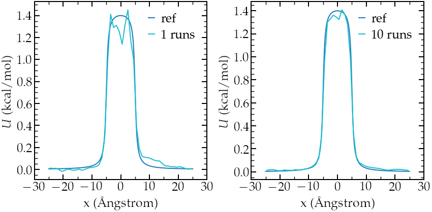
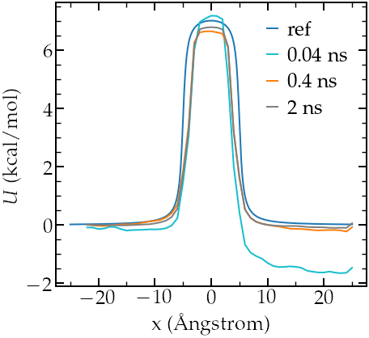
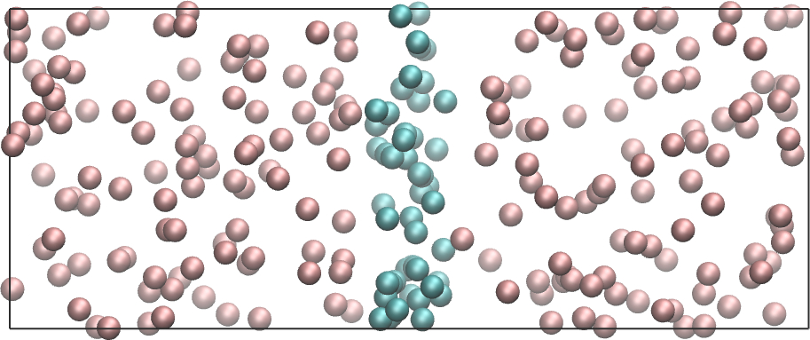

Free energy calculation
A simple sampling of a free energy barrier using WHAM

The objective of this tutorial is to measure the free energy profile across a barrier potential using two methods: free sampling and umbrella sampling. For the sake of simplicity and in order to reduce computation time, the barrier potential will be imposed artificially to the atoms, see the image below. The procedure is valid for more complex systems.

Left: potentiel \(U\) applied to the atoms to create an
exclusion zone in the middle. Right: force \(F\) derivative of \(U\).
There are two main parts to this tutorial:
- Free sampling - First, the free energy profile is calculated using the free sampling method.
- Umbrella sampling - Second, the method called umbrella sampling is used.
Method 1: Free sampling
Introduction
One way to calculate the free energy profile is to extract the
partition function from a classic (unbiased) molecular dynamics
simulation, and then to estimate the Gibbs free energy using
\[\Delta G = -RT \ln(p/p_0),\]
where \(\Delta G\) is the free energy difference, \(R\) the
gas constant, \(T\) the temperature, \(p\) the
pressure, and \(p_0\) the reference pressure.
As an illustration, let us apply this method to an extremely
simple configuration that consists in a few particles diffusing
in a box in presence of a position-dependent repealing force that
makes the centre of the box a relatively unfavourable area
to explore.
Basic LAMMPS parameters
Create an input script, and copy the following lines:
variable sigma equal 3.405 # Angstrom
variable epsilon equal 0.238 # Kcal/mol
variable U0 equal 2*${epsilon} # Kcal/mol
variable dlt equal 0.5 # Angstrom
variable x0 equal 5 # Angstrom
# --------------------- initialise the simulation
units real
atom_style atomic
pair_style lj/cut 3.822 # 2^(1/6) * 3.405 WCA potential
pair_modify shift yes
boundary p p p
Here we start by defining variables for the Lennard-Jones interaction (\(\sigma\) and \(\epsilon\))
and for the repulsive potential \(U (x)\) : \(U_0\), \(\delta\), and \(x_0\), see the analytical expression
below and the plot at the top of this page.
If you followed tutorial 1, you
must be familiar with these commands. The system
of unit 'real' (for which energy is
in kcal/mol, distance in Ångstrom, time in femtosecond)
has been chosen for practical reason, as the
WHAM algorithm we are going to use in the second part of the
tutorial automatically assumes the energy to be in kcal/mol.
Atoms will interact through a Lennard-Jones potential with
a cut-off equal to \( \sigma \times 2 ^ {1/6} \) (i.e. a WCA repulsive potential).
The potential is shifted to be equal to 0 at the cut-off using the pair_modify.
System creation and settings
Let us define the simulation block and randomly add atoms:
# --------------------- define the system
region myreg block -25 25 -20 20 -20 20
create_box 1 myreg
create_atoms 1 random 60 341341 myreg
# --------------------- settings
mass * 39.95
pair_coeff * * ${epsilon} ${sigma}
neigh_modify every 1 delay 4 check yesArgon has been chosen as the gas of interest, which explains the values of the Lennard-Jones parameters \(\sigma\) and \(\epsilon\), as well as the mass \(m = 39.95\) grams/mole. The variables \(U_0\), \(\delta\), and \(x_0\) are used to create the potential. I have chosen it to be of the form: \[U(x) / U_0 = \arctan \left( \dfrac{x+x_0}{\delta} \right)- \arctan \left( \dfrac{x-x_0}{\delta} \right),\] (see the image at the beginning of this page). From the derivative of the potential with respect to \(x\), we obtain the expression for the force that we are going to impose to the particles in the simulation, \[F(x)=U_0/((x-x_0)^2/\delta^2+1)/\delta-U_0/((x+x_0)^2/\delta^2+1)/\delta.\]
Energy minimization and equilibration
Let us minimize the energy, and then impose \(F(x)\) to all of the atoms in the simulation using the 'addforce' command:
# --------------------- Run
minimize 1e-4 1e-6 100 1000
reset_timestep 0
variable U atom ${U0}*atan((x+${x0})/${dlt})-${U0}*atan((x-${x0})/${dlt})
variable F atom ${U0}/((x-${x0})^2/${dlt}^2+1)/${dlt}-${U0}/((x+${x0})^2/${dlt}^2+1)/${dlt}
fix myadf all addforce v_F 0.0 0.0 energy v_UFinally, let us combine the fix nve with a Langevin thermostat to run a molecular dynamics simulation. With these two commands, the MD simulation is effectively in the NVT ensemble (constant number of atoms \(N\), constant volume \(V\), and constant temperature \(T\)). Let us perform an equilibration step of 2000000 timestep (4 nanoseconds). To make sure that 4 ns is long enough, let us record the evolution of the number of atoms in the central (energetically unfavorable) region called 'mymes':
fix mynve all nve
fix mylgv all langevin 119.8 119.8 100 1530917
region mymes block -5 5 INF INF INF INF
variable n_center equal count(all,mymes)
fix myat all ave/time 100 500 50000 v_n_center file density_evolution.dat
timestep 2.0
thermo 100000
run 2000000Run and data acquisition
Finally, let us record the density profile of the atoms along the \(x\) axis using the 'ave/chunk' command. A total of ten density profiles will be printed. Timestep is reset to 0 to synchronize with the output times of density/number, and the fix 'myat' is canceled (it has to me canceled before a reset time).
unfix myat
reset_timestep 0
compute cc1 all chunk/atom bin/1d x 0.0 1.0
fix myac all ave/chunk 10 100000 1000000 cc1 density/number file density_profile_10run.dat
dump mydmp all atom 100000 dump.lammpstrj
run 10000000The simulation needs a few minutes to complete. You can visualize the dump file using VMD.
Data analysis
First, let us make sure that the equilibration duration of 4 ns is long enough by looking at the 'density_evolution.dat' file (left panel):

Left: evolution of the number of atoms in the central region
during equilibration. Right: averaged density profile during the run (\( \rho_0 = 0.0011 \)).
Here we can clearly see that the number of atom in the central region quickly evolves to an equilibrium value, and that the equilibration is long enough. We can then plot the averaged density profile (full line) and error (dashed line) (right panel). I used \(\rho_0 = 0.0011 \) to get the partition function \(\rho / \rho_0\).
Then, let us plot \(-R T \ln(\rho/\rho_0)\) and compare with the imposed (reference) potential \(U\). The results show a good agreement with the expected energy profile (despite a bit of noise in the central part):

Left: calculated potential after 1 run (2 ns).
Right:calculated potential after 10 runs (20 ns).
The limits of free sampling
If we increase the value of \(U_0\), the average number of atoms in the central region will decrease, making it difficult to obtain a good resolution for the free energy profile. For instance, multiplying \(F\) by a factor of 5, one gets an average concentration \( \rho \sim 0\) in the central part, which makes it impossible to estimate \(U\) (unless running the simulation for a much longer time (possibly days)):

Results for larger value of \(F\). Left: averaged density profile 10 run (20 ns).
Right:calculated potential after 10 runs (20 ns).
In that case, it is necessary to use more evolved methods, such as umbrella sampling, to extract free energy profiles. This is what we are going to do next.
Method 2: Umbrella sampling
Introduction
Umbrella sampling is a 'biased molecular dynamics' method, i.e a method in which additional forces are added to the atoms in order to make the 'unfavourable states' more likely to be explored: here, we are going to force a single atom to explore the central region. Starting from the same system as previously, we are going to add a potential \(V\) to one of the particle, and force it to move along the axe \(x\). The chosen path is called the axe of reaction. The final simulation will be analysed using the weighted histogram analysis method (WHAM), which allows to remove the effect of the bias and eventually deduce the unbiased free energy profile.
LAMMPS input script
Create a new script and copy the following lines:
# --------------------- define a bunch of variables
variable sigma equal 3.405 # Angstrom
variable epsilon equal 0.238 # Kcal/mol
variable U0 equal 2*${epsilon} # Kcal/mol
variable dlt equal 0.5 # Angstrom
variable x0 equal 5.0 # Angstrom
variable k equal 0.0205 # Kcal/mol/Angstrom^2
# --------------------- initialise the simulation
units real
atom_style atomic
pair_style lj/cut 3.822 # 2^(1/6) * 3.405 WCA potential
pair_modify shift yes
boundary p p p
# --------------------- define the system
region myreg block -25 25 -20 20 -20 20
create_box 2 myreg
create_atoms 2 single 0 0 0
create_atoms 1 random 5 341341 myreg
# --------------------- settings
mass * 39.948
pair_coeff * * ${epsilon} ${sigma}
neigh_modify every 1 delay 4 check yes
group topull type 2
# --------------------- run
variable U atom ${U0}*atan((x+${x0})/${dlt})-${U0}*atan((x-${x0})/${dlt})
variable F atom ${U0}/((x-${x0})^2/${dlt}^2+1)/${dlt}-${U0}/((x+${x0})^2/${dlt}^2+1)/${dlt}
fix pot all addforce v_F 0.0 0.0 energy v_U
fix mynve all nve
fix mylgv all langevin 119.8 119.8 100 1530917
timestep 2.0
thermo 100000
run 2000000
reset_timestep 0
dump mydmp all atom 1000000 dump.lammpstrj
Explanations: This code resembles the one of Method 1, except for the
additional particle of type 2. This particle is identical to the
particles of type 1 (same mass and Lennard-Jones parameters), and will be the only one to feel the
biasing potential.
Let us create a loop with 67 steps, and move
progressively the centre of the bias potential by increment of 0.3 nm:
variable a loop 50
label loop
variable xdes equal ${a}-25
variable xave equal xcm(topull,x)
fix mytth topull spring tether ${k} ${xdes} 0 0 0
run 200000
fix myat1 all ave/time 10 10 100 v_xave v_xdes file position.${a}.dat
run 200000
unfix myat1
next a
jump SELF loopExplanations: The spring command serves to impose the additional harmonic potential with spring constant \(k\). The centre of the harmonic potential \(x_\text{des}\) successively takes values from -25 to 25. For each value of \(x_\text{des}\), an equilibration step of 400 ps is performed, followed by a step of 400 ps during which the position along \(x\) of the particle is saved in data files (one data file per value of \(x_\text{des}\)). You can increase the duration of the run for better samplings, but 0.4 ps returns reasonable results despite being really fast (no more than a few minutes).

Density probability for each run. Note the good overlapping
between neighbor distributions.
WHAM algorithm
In order to treat the data, we are going to use the WHAM algorithm. You can download and compile the version of Alan Grossfield. In order to apply the WHAM algorithm to our simulation, we first need to create a metadata file. This file simply contains the paths of the data file, the value of \(x_\text{des}\), and the values of \(k\). To generate the file more easily, you can run this script using Octave or Matlab (assuming that the wham algorithm is located in the same folder as the LAMMPS simulations)
file=fopen('metadata.dat','wt');
for a=1:50
X=['./position.',num2str(a),'.dat ',num2str(a-25),' 1.5'];
fprintf(file,X);
fprintf(file,'\n');
endThe generated file named metadata.dat looks like that:
./position.1.dat -24 1.5
./position.2.dat -23 1.5
./position.3.dat -22 1.5
./position.4.dat -21 1.5
./position.5.dat -20 1.5
(...)
./position.48.dat 23 1.5
./position.49.dat 24 1.5
./position.50.dat 25 1.5Then, simply run the following command
./wham -25 25 50 1e-8 119.8 0 metadata.dat PMF.datwhere -25 and 25 are the boundaries, 50 the number of bins, 1e-8 the tolerance, and 119.8 the temperature. A file named PMF.dat has been created, and contains the free energy profile in Kcal/mol.
Results
We can compare the PMF with we the imposed potential, and the agreement in again quite good despite the very short calculation time:

Potential as predicted from umbrella sampling for different run durations.
Note that their is a small
difference in width between the calculated and the imposed potential, I am not
sure why, may be this can be improved by using different values of \(k\).
Going further with exercises
Exercise 1: Monte Carlo versus molecular dynamics
Use a Monte Carlo procedure to equilibrate the system instead of molecular dynamics. Is it more efficient than molecular dynamics?
Exercise 2 : Binary fluid simulation
Create a molecular simulation with two species, and apply a different potential on them using addforce to create the following situation:

Exercise 3 : Adsorption energy of a molecule at a solid wall
Apply umbrella sampling to calculate the free energy profile of a molecule of your choice normally to a solid wall.